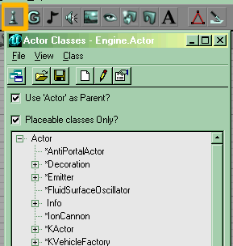

Actor Class Browser
The Actor Class Browser is one of several Resource Browsers in the UnrealEd Interface. By default it is docked in the Master Browser.
The basics of working with actors are covered in Actor Overview.
This browser displays a class tree for the current game: the contents of the list vary among Unreal Engine versions and different games. The classes shown initially are those in the packages UnrealEd has loaded on startup (set in the Game Ini File). Opening a package that contains classes adds them to the tree.

The Actor Classes Browser, with the toolbar button highlighted |
Opening
The Actor Class Browser is accessed either of two ways:
- Do UnrealEd Main Menu → View → Actor Class Browser
- Press the Actor Class Browser button in the middle of the toolbar at the top of the Editor window. It looks like a chess pawn.
Uses
- Selecting a class to then Add an actor of this class to a map: anything from decorations (meshes), spawnpoints, inventory items to special effects and so on.
- Setting default properties for classes.
- Export actors
- Load up extra packages containing actors.
Once an Actor is selected you can add it to your map by doing Viewport Context Menu → Add <class> here on the spot where you want the actor to be placed.
Note that there is a quick way to make a class current in this browser:
- find an actor on this class in your map
- Do Actor Context Menu → Make Current
Browser Toolbar Buttons
The Static Mesh Browser has the following buttons (from left to right) in its toolbar:
- Dock / undock from browser window
- Open Package
- Save Selected Packages (Use the browser menu View → Show Packages to show all packages containing classes)
- New Script
- Edit Script
- Edit Default Properties
Menu
See Actor Classes Browser Menu.
File → Export changed scripts – does this actually work????
Wormbo: I think it exports scripts that have not yet been compiled. Or it exports scripts in packages that have not yet been saved.
Related Topics
- Working with actors in general: Actor Overview
- Step by step tutorial: how to Add an Actor
- Other parts of the UnrealEd Interface:
- The UnrealEd Toolbar
- Next resource browser: Group Browser
- Classes:
- Actor Class Hierarchy (all on one page)
- Actor class (browse the tree page by page)
Comments
Tarquin: "Export Changes Scripts" – which ones does that mean? A script changed & recompiled wasn't saved, but one where I'd changed defaults was.